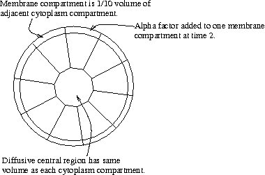

This demo shows Ste5 migration to the cell membrane, with the extra added attraction of Ste5 dimerization. This simulation also uses the (correct?) structure of the receptor complex, in which Ste2 binds to Gpa1, instead of to Ste4.
The compartment structure looks like this:

Unfortunately, it's not obvious from this plot that all the alpha factor goes into compartment 0 at time 2. But the numerical dump file alpha.dmp does show this clearly.

Now, since Ste5 dimerizes itself, more of it is depleted from the cytoplasm, but we don't see a great increase in the number of Ste5-containing molecules in the membrane. (The Ste5-containing molecules in the membrane tend to contain more Ste5.) In this simulation, Ste5 dimerizes with itself only when both Ste5's are bound to Ste4.

Ste5-containing molecules in the membrane compartments.

Ste5-dimer containing molecules in the membrane compartments. In this simulation, Ste5 binds Ste5 only when both Ste5's are bound to Ste4. When either partner of an existing Ste5-Ste5 dimer unbinds from Ste4, the Ste5-Ste5 binding breaks rapidly. This seems to imply that Ste5-Ste5 dimers are short-lived.

Time detail of Ste5-dimer containing molecules in all membrane compartments.

Time detail of Ste5-dimer containing molecules in a couple of membrane compartments.

Ste5-containing molecules in the central core.

Gpa1 binding to GDP and GTP.